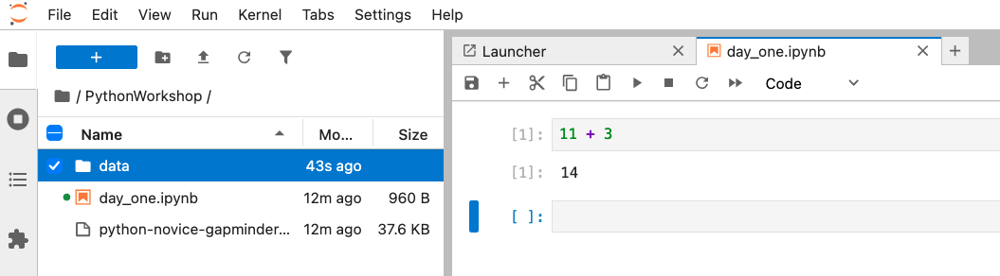
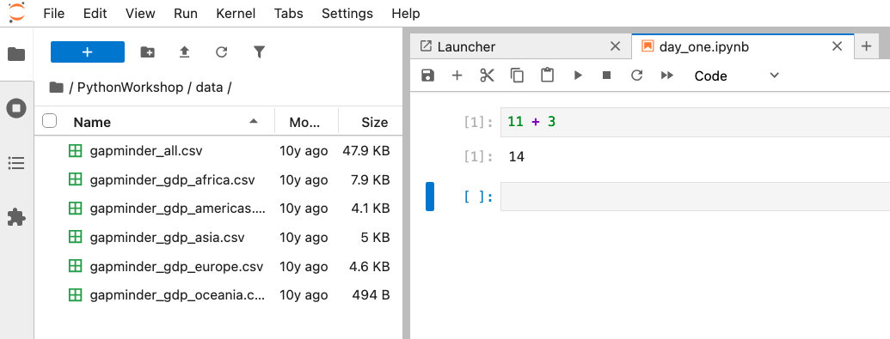

Running and Quitting
Last updated on 2026-10-05 | Edit this page
Overview
Questions
- How can I run Python programs?
Objectives
- Launch JupyterLab.
- Create a Jupyter notebook.
- Shut down the JupyterLab server.
- Create Markdown cells in a notebook.
- Create and run Python cells in a notebook.
- Distinguish between Markdown cells and Python cells.
Getting Started with JupyterLab
We’re going to use JupyterLab for the remainder of this workshop.
JupyterLab has several useful features for Python programmers:
- You can easily type, edit, and copy/paste blocks of code.
- Tab complete allows you to easily access the names of things you are using and learn more about them.
- You can annotate your code with links, different sized text, bullets, etc. to make it more accessible to you and your collaborators.
- It allows you to display visualizations next to the code that produces them to tell stories about data.
Starting JupyterLab
You can start the JupyterLab server through the command line via the
Terminal (Mac) or via Anaconda Prompt (Windows). Anaconda
Prompt is included as part of the Miniconda Python distribution you have
installed.
You cannot open Jupyter notebooks (.ipynb files) by
clicking on them directly. Instead, you will need to open JupyterLab and
open your notebooks using the JupyterLab File Browser.
macOS - Command Line
To start the JupyterLab server you will need to access the command line through the Terminal.
There are two ways to open Terminal on Mac.
- In your Applications folder, open Utilities and double-click on Terminal
- Press Command + spacebar to launch Spotlight.
Type
Terminaland then double-click the search result or hit Enter
Inside the Terminal, enter the following command to launch JupyterLab.
The JupyterLab Interface
JupyterLab has many features found in traditional integrated development environments (IDEs) but is focused on providing flexible building blocks for interactive, exploratory computing.
The JupyterLab Interface consists of the Menu Bar, a collapsable Left Side Bar, and the Main Work Area which contains tabs of documents and activities.
Menu Bar
The Menu Bar at the top of JupyterLab has the top-level menus that expose various actions available in JupyterLab along with their keyboard shortcuts (where applicable). The following menus are included by default.
- File: Actions related to files and directories such as New, Open, Close, Save, etc. The File menu also includes the Shut Down action used to shutdown the JupyterLab server.
- Edit: Actions related to editing documents and other activities such as Undo, Cut, Copy, Paste, etc.
- View: Actions that alter the appearance of JupyterLab.
- Run: Actions for running code.
- Kernel: Actions for managing kernels. Kernels in Jupyter will be explained in more detail below.
- Tabs: A list of the open documents and activities in the main work area.
- Settings: Common JupyterLab settings can be configured using this menu. There is also an Advanced Settings Editor option in the dropdown menu that provides more fine-grained control of JupyterLab settings and configuration options.
- Help: A list of JupyterLab and kernel help links.
Kernels
The JupyterLab docs define kernels as “separate processes started by the server that run your code in different programming languages and environments.”
- Opening a Jupyter Notebook starts a kernel process for running code.
- By default, Jupyter runs Python code using an IPython kernel.
- Using other Jupyter kernels for other programming languages would let us run code in other programming languages—like R, Julia, or Ruby—in the same JupyterLab interface.
A screenshot of the default Menu Bar is provided below.

Left Sidebar
The left sidebar contains a number of commonly used tabs, such as a file browser (showing the contents of the directory where the JupyterLab server was launched), a list of running kernels and terminals, the command palette, and a list of open tabs in the main work area. A screenshot of the default Left Side Bar is provided below.

The left sidebar can be collapsed or expanded by selecting “Show Left Sidebar” in the View menu or by clicking on the active sidebar tab.
Main Work Area
The main work area in JupyterLab enables you to arrange documents (notebooks, text files, etc.) and other activities (terminals, code consoles, etc.) into panels of tabs that can be resized or subdivided. A screenshot of the default Main Work Area is provided below.
If you do not see the Launcher tab, click the blue plus sign under the “File” and “Edit” menus and it will appear.

Drag a tab to the center of a tab panel to move the tab to the panel. Subdivide a tab panel by dragging a tab to the left, right, top, or bottom of the panel. The work area has a single current activity. The tab for the current activity is marked with a colored top border (blue by default).
Creating a Jupyter Notebook
To open a new notebook click the Python 3 icon under the Notebook header in the Launcher tab in the main work area. You can also create a new notebook by selecting New -> Notebook from the File menu in the Menu Bar.
Additional notes on Jupyter notebooks.
- Notebook files have the extension
.ipynbto distinguish them from plain-text Python programs. - Notebooks can be exported as Python scripts that can be run from the command line.
Below is a screenshot of a Jupyter notebook running inside JupyterLab. If you are interested in more details, then see the official notebook documentation.

How It’s Stored
- The notebook file is stored in a format called JSON.
- Just like a web page, what’s saved looks different from what you see in your browser.
- The JSON format allows Jupyter to mix source code, text, and images in one file.
Arranging Documents into Panels of Tabs
In the JupyterLab Main Work Area you can arrange documents into panels of tabs. Here is an example from the official documentation.

Use the Launcher to create a new text file called README.txt. Open your notebook, File Browser tab, and text file and arrange them into three panels in the main work area. What combination of panels and tabs do you think will be most useful for your workflow?
After creating the necessary tabs, you can drag one of the tabs to the center of a panel to move the tab to the panel; next you can subdivide a tab panel by dragging a tab to the left, right, top, or bottom of the panel.
Code vs. Text
Jupyter mixes code and text in different types of blocks, called cells. We use the term “code” to mean “code written in a language like Python.”
- In this class, a “code cell” will always contain Python.
- A “text cell” is one that contains ordinary prose written for human beings.
Using Python as a Calculator
Python can be used as a calculator to perform basic mathematical operations like multiplication and addition.

Create a new cell in your Jupyter notebook. Make sure it is a “Code” cell. Type the following and press the ▶ Play Button or Shift+Enter on your keyboard to run your code.
OUTPUT
8Python “knows” order of operations, so multiplication is applied before addition. Run the following calculation in a new cell.
OUTPUT
23Negative Numbers?
You can use parentheses with mathematical expressions in Python. Statements inside parentheses are always evaluated first.
Adjust the following code by inserting parentheses so that it returns a negative number as a result. Do not change anything else about the code.
Remember to run the code cell to check your work.
The Notebook has Command and Edit modes.
- If you press Esc and Return alternately, the outer border of your code cell will change from gray to blue.
- These are the Command (gray) and Edit (blue) modes of your notebook.
- Command mode allows you to edit notebook-level features, and Edit mode changes the content of cells.
- When in Command mode (esc/gray),
- The b key will make a new cell below the currently selected cell.
- The a key will make one above.
- The x key will delete the current cell.
- The z key will undo your last cell operation (which could be a deletion, creation, etc).
- All actions can be done using the menus, but there are lots of keyboard shortcuts to speed things up.
Command vs. Edit
- In the Jupyter notebook page are you currently in Command or Edit
mode?
- Switch between the modes.
- Use the shortcuts to generate a new cell.
- Use the shortcuts to delete a cell.
- Use the shortcuts to undo the last cell operation you performed.
Command mode has a gray border and Edit mode has a blue border. Use Esc and Return to switch between modes. You need to be in Command mode (Press Esc if your cell is blue). Type b or a. You need to be in Command mode (Press Esc if your cell is blue). Type x. You need to be in Command mode (Press Esc if your cell is blue). Type z.
Use the keyboard and mouse to select and edit cells.
- Pressing the Return key turns the border blue and engages Edit mode, which allows you to type within the cell.
- Because we want to be able to write many lines of code in a single cell, pressing the Return key when in Edit mode (blue) moves the cursor to the next line in the cell just like in a text editor.
- We need some other way to tell the Notebook we want to run what’s in the cell.
- Pressing Shift+Return together will execute the contents of the cell.
- Notice that the Return and Shift keys on the right of the keyboard are right next to each other.
The Notebook will turn Markdown into pretty-printed documentation.
- Notebooks can also render Markdown.
- A simple plain-text format for writing lists, links, and other things that might go into a web page.
- Equivalently, a subset of HTML that looks like what you’d send in an old-fashioned email.
- Turn the current cell into a Markdown cell by entering the Command mode (Esc/gray) and pressing the M key.
-
In [ ]:will disappear to show it is no longer a code cell and you will be able to write in Markdown. - Turn the current cell into a Code cell by entering the Command mode (Esc/gray) and pressing the y key.
Markdown allows you to “style” text cells.
Markdown code |
Rendered output |
|
|
|
|
| <p></p> | 1. Use numbers | 1. Use numbers | 1. to create | 2. to create | 1. numbered lists. | 3. numbered lists.
| | |
||
|
A Level-1 Heading |
|
|
A Level-2 Heading (etc.) |
|
|
Line breaks don’t matter. But blank lines create new paragraphs. |
|
|
Links | are created with
|
|
Adding Data to Your Project Folder
The data we will be using for this workshop is taken from the gapminder dataset.
To add the data to your Python project, download and unzip
the file python-novice-gapminder-data.zip
to your PythonWorkshop folder.

Double-click the zip file (MacOS) or right-click->Extract
All (Windows) to extract a folder of data. The unzipped folder will
be named data.
Copy the data folder into your
PythonWorkshop folder.

Click the ⟳ refresh symbol in the JupyterLab File Browser, then click
inside the data folder to inspect its contents from within
JupyterLab. You should see six files inside the data
folder.
Make sure you have a PythonWorkshop folder with a
data folder inside before the first workshop session
ends.
Closing JupyterLab
From the Menu Bar select the File menu and then choose Shut Down at the bottom of the dropdown menu. You will be prompted to confirm that you wish to shutdown the JupyterLab server (don’t forget to save your work!).
Click Shut Down to shut down the JupyterLab server.
You can now close the terminal application you used to launch the server.
To restart the JupyterLab server you will need to re-run the following command from Terminal (MacOS) or Anaconda Prompt (Windows).
Creating Lists in Markdown
Create a list in a Markdown cell in a notebook that looks like this:
- Get funding.
- Do work.
- Write up.
- Publish.
Your list should look like this.
1. Get funding.
2. Do work.
3. Write up.
4. Publish.Change an Existing Cell from Code to Markdown
What happens if you write some Python in a code cell and then you switch it to a Markdown cell? For example, put the following in a code cell:
And then run it with Shift+Return to be sure that it works as a code cell. Now go back to the cell and use Esc then m to switch the cell to Markdown and “run” it with Shift+Return. What happened and how might this be useful?
Reasoning with True and False
Python can evaluate whether or not mathematical statements are True or False.
You can read the following statement as asking “is 3 less than 5?” Try running it.
OUTPUT
TrueChange one symbol in the following statement to make it
return True instead. Keep in mind that arithmetic is always
evaluated before operators like < or
>.
- Use the JupyterLab Notebook interface for editing and running Python.
- Use the keyboard and mouse to select and edit cells.
- Jupyter Notebooks turn Markdown into pretty-printed documentation.
- Markdown can be used to format commentary on Python code.